1. 发版台是什么
发版台是跑在跳板机上的独立程序（一个容器，不进 K8s），随离线包发出。它把离线包里的版本部署到集群： 首次部署、升级、回滚走同一套流程，运维只需要在两处做判断——看变更预览后确认，以及白名单没登记齐时等白名单团队补上。
| 做法 | 说明 |
|---|---|
| 扫描先行 | 发布前逐项检查镜像仓库、K8s 权限、NAS、模型、中间件、白名单、统一认证、集群余量，全部可用才能开始；每项写明不通过的原因与该找谁。 |
| 改集群前先确认 | 渲染出的清单与集群现状做差异，运维看过点「确认并继续」之前，集群一处都不改。 |
| 不停服务 | 固定池化逐个槽位替换：等这个人不忙 → 把他的状态写回 NAS → 换镜像（每槽位约 3 秒），他下一句话自动恢复。 |
| 真实验证 | 最后用冒烟工号经网关登录、做一次真实对话、出一份只读诊断报告、做一次知识库检索。 |
| 白名单只核对 | 白名单仍由白名单团队手工执行；发版台按名字、正文 md5、参数逐条核对。 |
| 可续跑、可回滚 | 每一步都能重复执行；失败停在那一步，处理后从这一步续跑，或回滚到上一版。 |
frontend；
本仓库的部署里没有这一项，其余完全相同。2. 准备
2.1 跳板机要求
| 项 | 要求 |
|---|---|
| 系统 | Linux x86_64 或 aarch64，装有 docker（能 docker load、docker run） |
| 集群访问 | 一份 kubeconfig，能访问目标命名空间（权限见 2.2）；用令牌或证书方式认证——exec 认证插件（云厂商的登录程序）在容器里没有 |
| 网络 | 能到 K8s API 与内网镜像仓库；白名单用「只读账号」方式时还要能到中间件库 |
| 磁盘 | 放得下离线包（每个版本约 1 GB）；状态目录很小 |
2.2 kubeconfig 需要的权限（命名空间内）
ConfigMap 读 / 改，Secret 读 / 建，Deployment 改与删，StatefulSet 改，Pod 改与删，pods/exec、pods/portforward，
Job 建与删，NetworkPolicy 改。首次部署另需建命名空间（没有权限就请平台团队先建好命名空间与 PV）。资源扫描的「Kubernetes」一项会逐条核对，缺哪条写哪条。
2.3 发布包目录
把每个版本的离线包整个目录拷进同一个「发布包目录」（如 /data/releases/）。拷文件，不要用链接：发版台在容器里只看得到这个目录，
链到别处的文件看不到（发布包页会标红说明）。
/data/releases/
gaussdb-agent-v1.4.3-oc1.18.27/ # 上一版的包留着:回滚要用
gaussdb-agent-v1.4.4-oc1.18.27/
gaussdb-agent-v1.4.4-oc1.18.27-amd64.tar.gz(.sha256) # 业务镜像
gaussdb-agent-v1.4.4-oc1.18.27-k8s.tar.gz(.sha256) # 清单与文档
release.yaml(.sha256) # 版本说明:镜像 digest、白名单全量、各版本的变化
gaussdb-agent-release-v1.4.4-oc1.18.27-amd64.tar.gz # 发版台自己
release-console.sh # 启动脚本ghcr.io/sqlrush/gaussdb-agent-release 也发布了，但发版台要从离线包里取业务镜像推进内网仓库、读 release.yaml，
所以离线包不能省；按本手册用包里的 release-console.sh 起即可。3. 启动与停止
- 运行目标版本包目录里的启动脚本：
脚本先核对发版台镜像的 sha256（拷坏了不导入），再导入、启动。$ /data/releases/gaussdb-agent-v1.4.4-oc1.18.27/release-console.sh 导入发版台镜像 gaussdb-agent-release-v1.4.4-oc1.18.27-amd64.tar.gz … 发版台已启动:http://127.0.0.1:8090/ (别的机器上看:ssh -L 8090:127.0.0.1:8090 <这台跳板机>) 发布包目录 /data/releases · 状态 /home/ops/gaussdb-release-state · kubeconfig /home/ops/.kube/config - 发版台只听跳板机本机，不做登录。在自己电脑上看：
ssh -L 8090:127.0.0.1:8090 <跳板机> # 然后浏览器打开 http://127.0.0.1:8090/
| 选项 | 默认 | 说明 |
|---|---|---|
--releases <目录> | 本包目录的上一级 | 发布包目录（容器里只读） |
--state <目录> | ~/gaussdb-release-state | 配置版本、发布记录、日志、渲染出的清单。状态目录决定管哪个环境；换发版台版本时用同一个 |
--kubeconfig <文件> | $KUBECONFIG 或 ~/.kube/config | 它引用的证书文件在别的目录也会一起挂进去 |
--port <端口> | 8090 | |
--kubectl <文件> | 镜像自带 v1.31 | 集群与 1.31 相差超过一个小版本时扫描标黄（6.2），换成集群配套的 kubectl（静态二进制） |
--ca <文件> | — | 内网镜像仓库的 CA 证书；资源配置里「CA 证书」填同一路径 |
--force | — | 有发布正在执行也替换发版台（那一步被中断，重启后停在原处等续跑） |
其他命令：release-console.sh stop 停；release-console.sh logs 看日志。
release-console.sh，状态目录不变：同一版本已在运行时只打印地址；
有发布正在执行时不替换（等它停在确认关卡或做完）。目录与文件按跳板机上的原路径挂进容器，界面和日志里看到的路径就是跳板机上的路径。
跳板机重启后发版台自动起来，正在执行的发布停在原处、标「被中断」，在界面上选续跑或回滚。4. 界面一览
左侧六个页面：总览（当前版本、池子、最近的发布、集群架构）、发布（扫描、计划、流程、关卡、实时日志、集群大盘）、发布包、资源配置、
历史与回滚、操作记录。页面每 1.5 秒自动刷新；地址 #release/<步号> 直接打开某一步的明细。

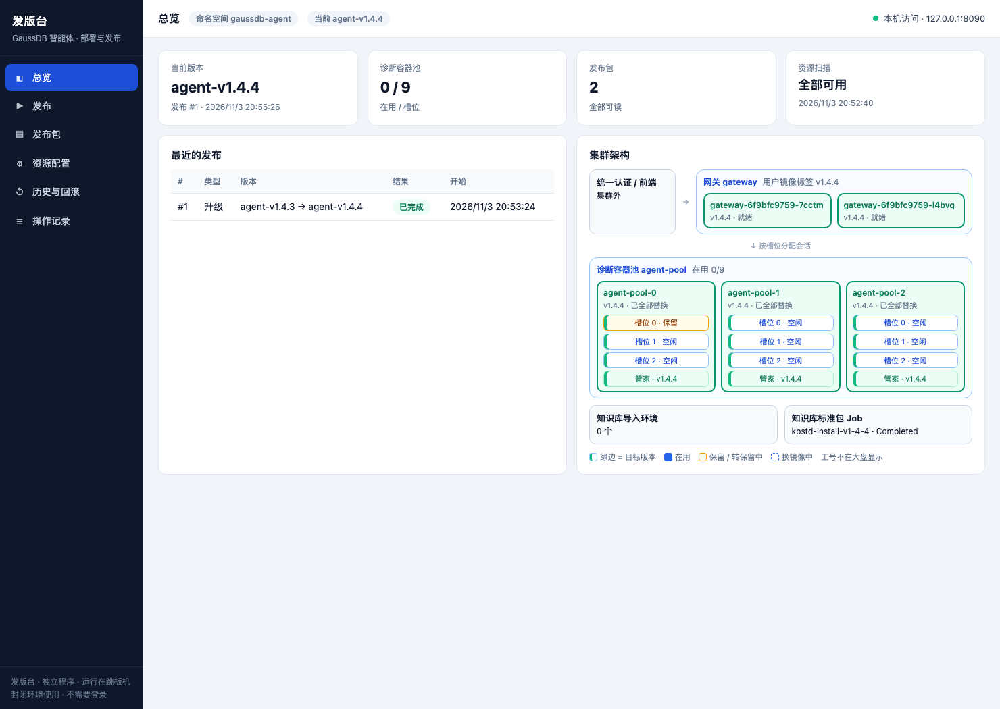
5. 资源配置
「资源配置」页按页签分组，一次配好，之后每次发布前自动逐项扫描。每次保存是一个配置版本，发布记录里写着用的是哪一版。
| 页签 | 填什么 |
|---|---|
| Kubernetes | 命名空间（默认 gaussdb-agent）、kubeconfig 里的 context、节点架构（留空 = 自动识别） |
| 镜像仓库 | 方式：推送（发版台把包里的镜像推进内网仓库，默认）或预载（镜像已由平台载进每个节点）；仓库前缀、账号、口令、CA 证书 / 不校验证书 / 明文 HTTP |
| 模型 | 地址（OpenAI 兼容，以 /v1 结尾）、模型 ID、API Key、是否支持图片输入 |
| 中间件 | 地址、端口、接口路径前缀（不回显）、Appkey、签名方式、实例别名（别名=IP/库名，一行一个）、SM2 私钥 |
| 网络策略 | 中间件、模型、K8s API、上游的网段与端口——只填集群外的；集群内的规则随版本 |
| 白名单核对 | 方式：导出文件或只读账号（见 8.3） |
| 统一认证与冒烟 | 工号与角色的请求头名、信任凭据、冒烟工号（要已开通中间件令牌）、做诊断用的实例别名 |
| 池子与网关 | 运行模式、Pod 数 × 槽位数（只在首次部署时用；升级保留集群现有规模）、拉取策略 |

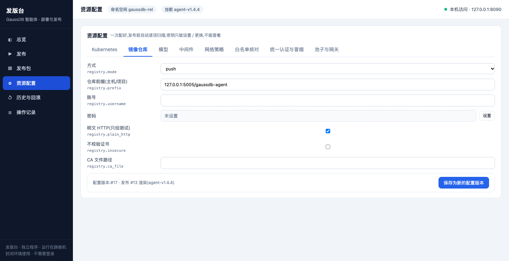

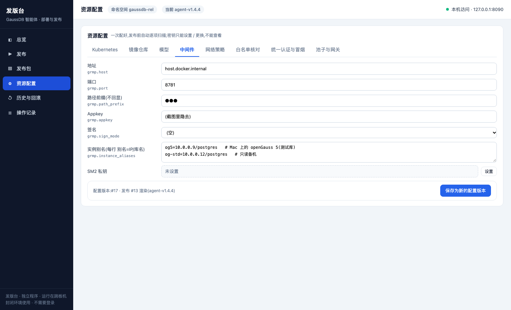

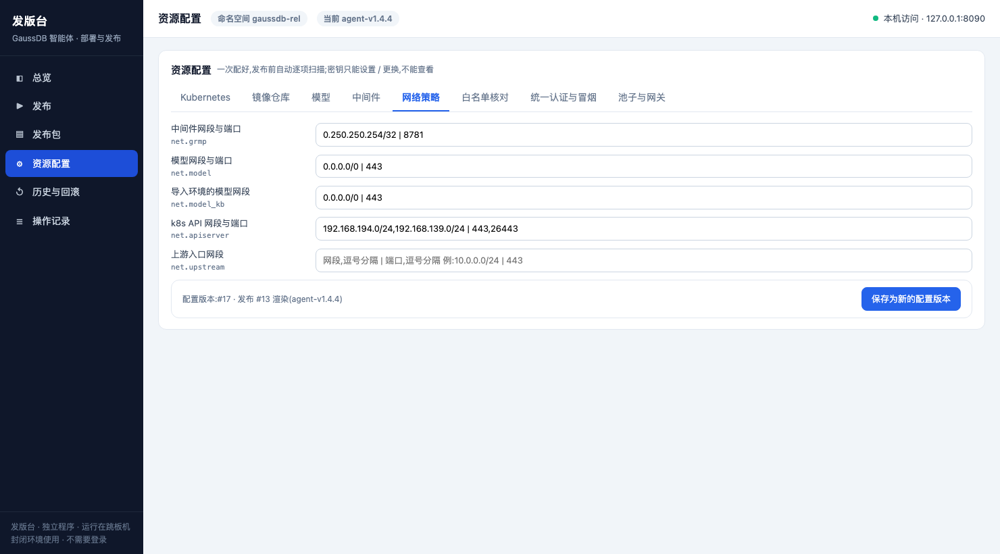

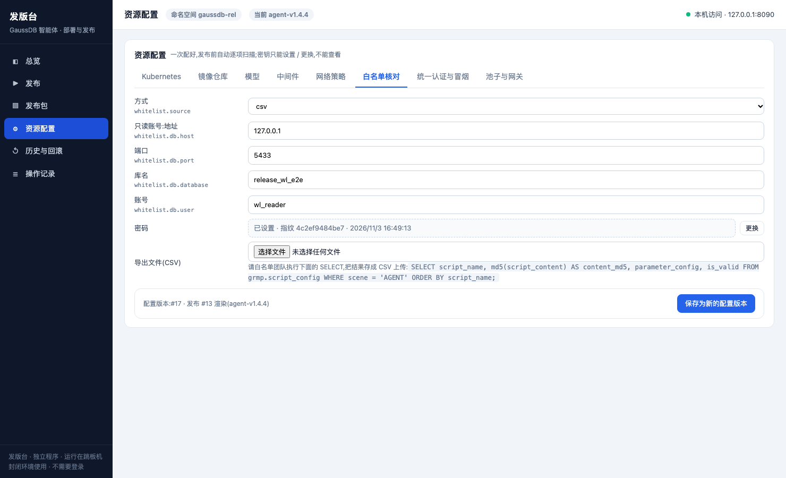
6. 发布前资源扫描
「发布」页点「扫描资源」。全部可用（黄色提示可以）且在 1 小时内才能开始发布。模型、中间件、NAS 三项借池子的管家容器在集群里测，密钥不出容器； 首次部署还没有池子时这三项标黄，由冒烟验证核对。
6.1 九项检查
| 项 | 核对什么 | 不通过时 |
|---|---|---|
| 发布包目录 | 发现哪些包、目标包的 sha256 | 拷坏了重新拷；链接换成真文件 |
| 内网镜像仓库 | 握手与认证（推送权限在入库时核对） | 地址、账号口令、CA 证书 |
| Kubernetes | 命名空间、2.2 的权限、节点架构、kubectl 与集群的版本差 | 缺哪条权限请平台团队授；版本差大用 --kubectl |
| NAS | 在集群里以 uid 1000 写一个探针文件、剩余空间 | 请存储团队把 users/ 的属主改为 1000 |
| 模型服务 | 在集群里发一句最短的对话（与智能体同一个接口、同一个模型 ID） | 401/403 = API Key；400/404 = 模型 ID 或地址；402 = 余额；503/429 = 服务方忙，稍后再扫 |
| 中间件 | 在集群里连中间件端口；接口路径前缀已设置 | 查网络策略的中间件网段；签名在冒烟时核对 |
| 白名单核对 | 导出文件已上传；或只读账号连得上、读到几条 | 见 8.3 |
| 统一认证 | 信任凭据、冒烟工号的中间件令牌 | 请平台开通冒烟工号 |
| 集群余量 | 可分配内存 | 按槽位在线替换不额外占用 |
6.2 黄色提示的例子

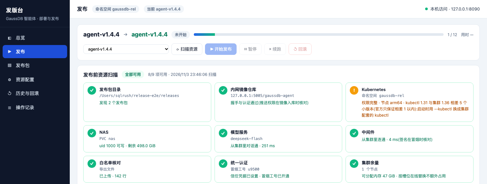
--kubectl 换成集群配套的）；
黄色不挡发布，红色挡。7. 升级计划
「发布」页上方选目标版本（默认是比当前新的最新一个），扫描通过后显示本次计划与地铁线：12 个步骤分「准备 / 确认 / 替换 / 验证」四段， 跳过的步骤写明原因（例如回滚时白名单、知识库标准包不动）。

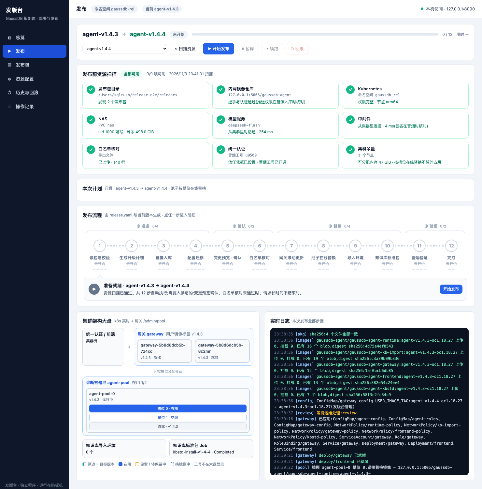
| # | 步骤 | 做什么 |
|---|---|---|
| 1 | 读包与校验 | 核 sha256、读 release.yaml、核对包里每个镜像的 digest |
| 2 | 生成升级计划 | 识别集群当前版本（网关、用户镜像标签、池子三处），累计中间各版本的变化（跳版本升级时一起做） |
| 3 | 镜像入库 | 推进内网仓库，已有的层跳过，推完回读 digest；集群里的镜像按 digest 钉住 |
| 4 | 配置迁移 | 按第 5 章迁移配置、渲染清单、生成与集群的差异 |
| 5 | 变更预览 · 确认 | 停下来等运维看差异后确认（8.2），确认前不改集群 |
| 6 | 白名单核对 | 逐条核对，没齐就停下等补登记（8.3） |
| 7 | 网关滚动更新 | 应用配置与清单，网关滚动更新并等就绪 |
| 8 | 池子在线替换 | 逐个槽位替换（8.4）；目标版本没声明可与当前版本混跑时，改为逐个 Pod 整体替换（其余 Pod 照常服务） |
| 9 | 导入环境 | 版本要求时删掉旧的知识库导入容器（NAS 数据不动） |
| 10 | 知识库标准包 | 跑一次安装 Job（同版本跳过） |
| 11 | 冒烟验证 | 模拟登录、真实对话、诊断报告、知识库检索（8.6） |
| 12 | 完成 | 记下当前版本与配置版本，生成发布报告 |
8. 执行发布
8.1 流程与实时日志

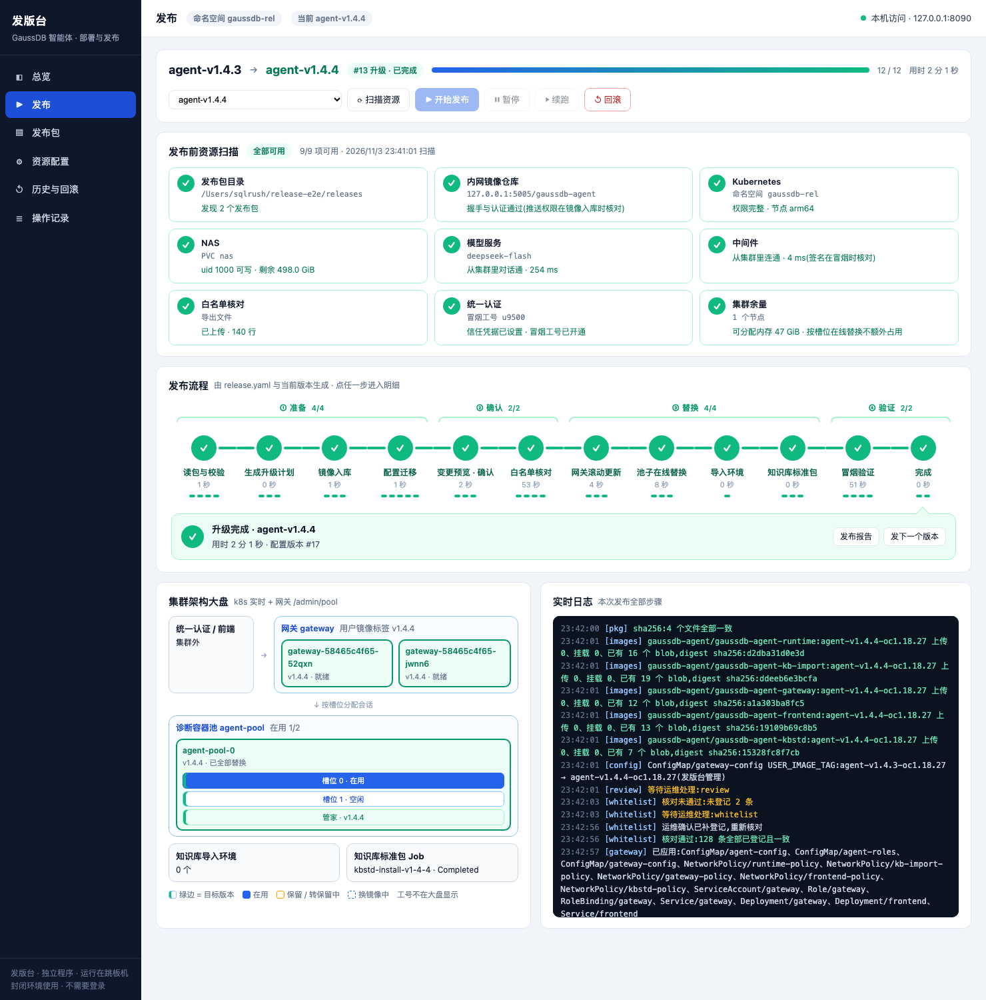
8.2 变更预览 · 确认（关卡）
渲染出的清单与集群现状做 kubectl diff，只留对象名与真正变化的行。敏感值不显示，Secret 与网关为用户建的容器不在这里。
一次性的标准包 Job 不进差异，在末尾单独列一行。

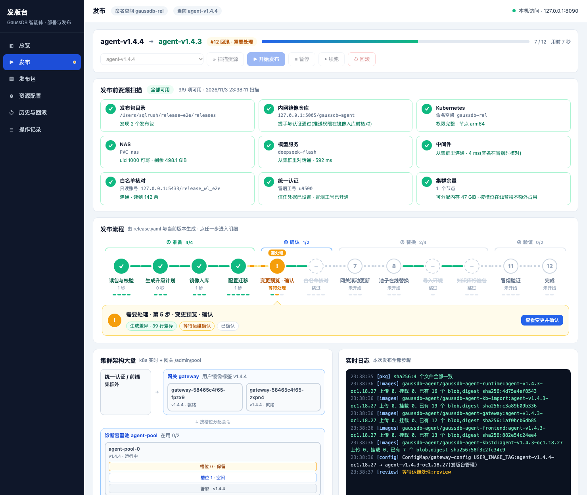

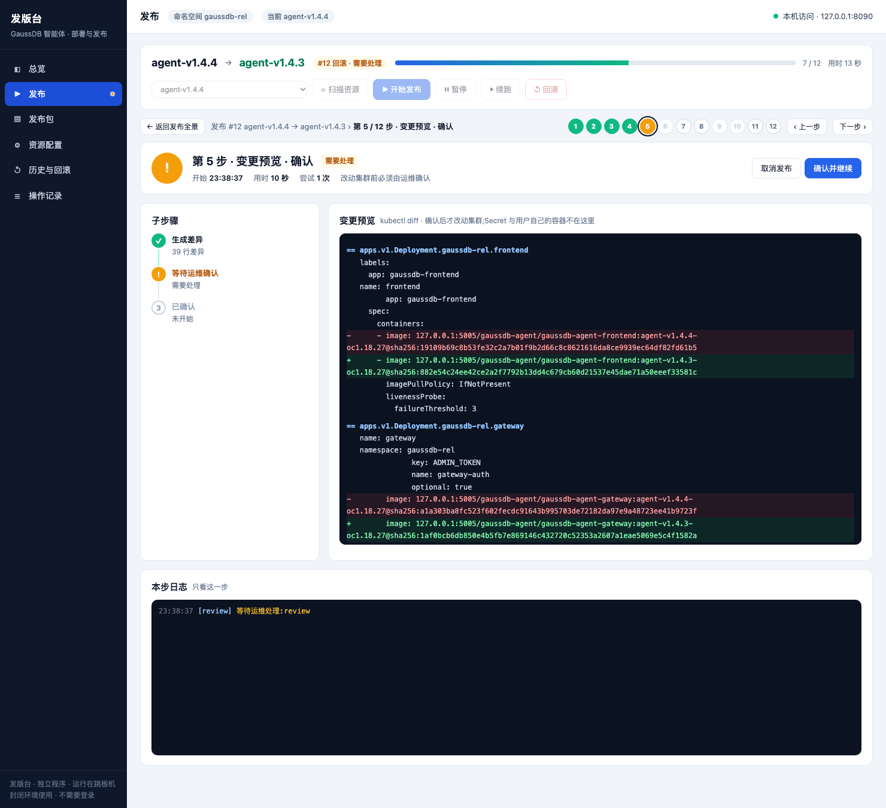
agent-roles）、出网地址等现场改过的值没有出现在减号行里；
③ 没有意外的删除。看不懂的差异先「取消发布」再问我方，取消不会改动集群。8.3 白名单核对
把本版本应有的每个脚本（名字、正文 md5、参数）与中间件库 grmp.script_config 里 scene='AGENT' 的登记逐条比对，分六类：
已登记且一致 / 未登记 / 正文不一致 / 参数不一致 / 重名 / 未生效。中间件里多出来的、本版本不需要的脚本只列出，不算失败。

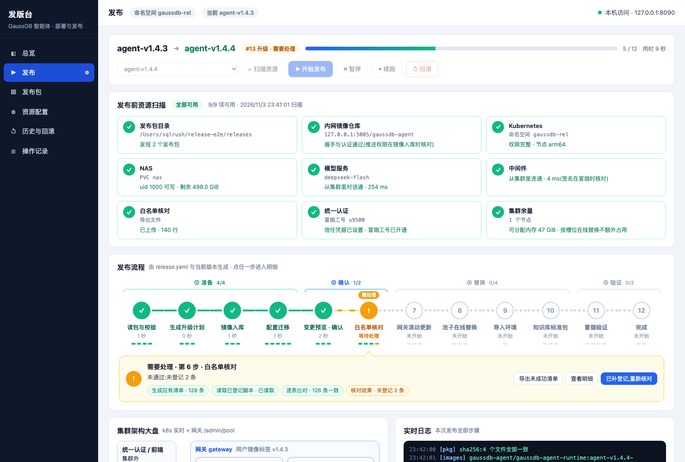

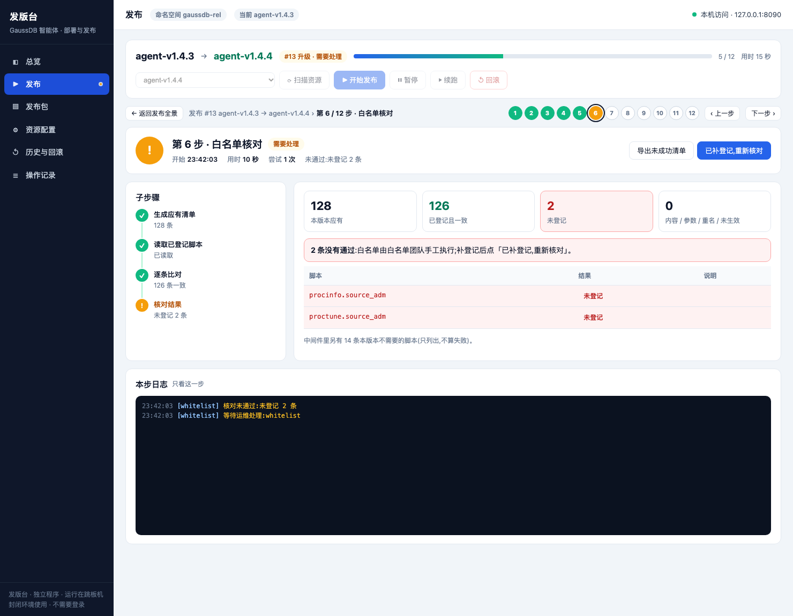
| 方式 | 怎么做 |
|---|---|
| 导出文件 | 白名单团队执行资源配置页给出的 SELECT，结果存成 CSV，在「资源配置 · 白名单核对」上传；补登记后重新导出、上传，再点「已补登记，重新核对」。 |
| 只读账号 | 发版台直接连中间件库查（只读会话、30 秒语句超时）。账号只需 schema grmp 的 USAGE 与这张表的 SELECT。
GaussDB 默认的 sha256 认证标准客户端不认：只读账号要在 password_encryption_type 为 0 或 1 时创建、pg_hba 对跳板机用 md5；做不到就用导出文件。
连不上时扫描会写明是认证方式、口令、pg_hba、库名、权限还是网络。 |
8.4 池子在线替换
每个槽位：在用的先等不忙（距上次回答结束 ≥ 10 秒）→ 转保留（他的会话与文件写回 NAS）→ 腾挪并换这个容器的镜像 → 核验新容器（新容器 ID、握手、空盘）→ 空闲（新版本）。 管家最后换，且等本 Pod 所有槽位都不忙；换管家时在用的人被转保留，下一句自动恢复。

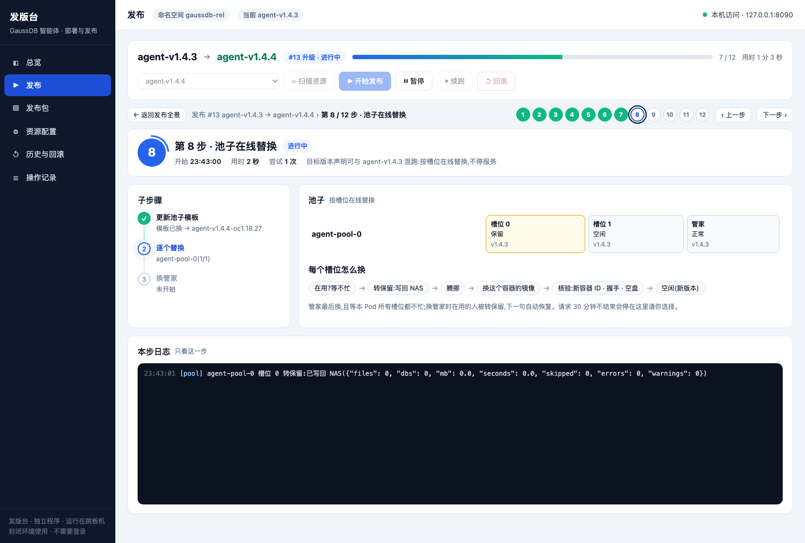

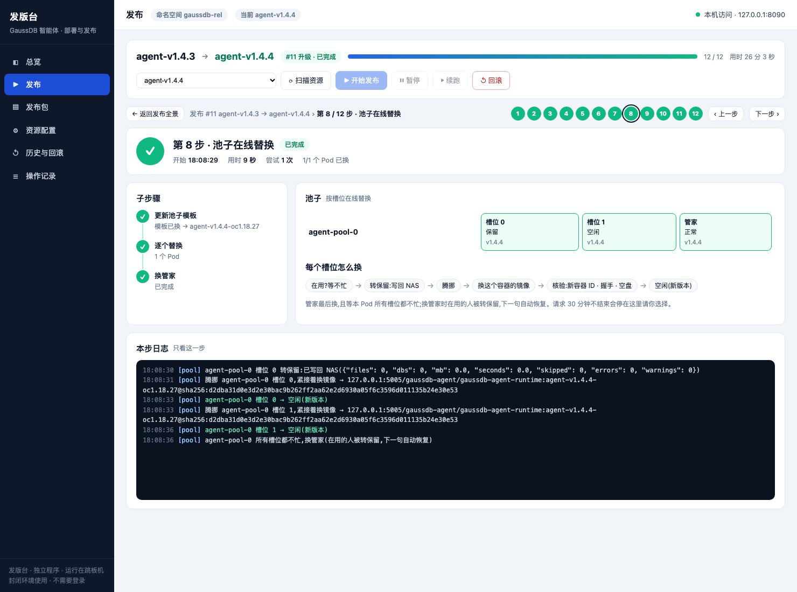
8.5 导入环境与知识库标准包
版本要求时（版本说明「升级前先看」会写），第 9 步删掉现有的知识库导入容器（role=kb-import），NAS 上的数据不动，管理员下次进入导入环境时按新版本重建。
第 10 步跑本版本的标准包安装 Job（Job 名带版本号，如 kbstd-install-v1-4-4）：内容相同的跳过；同名 Job 已在而镜像不同时删掉重跑；旧版本的 Job 删掉。
8.6 冒烟验证
经网关走用户的真实路径：① 冒烟工号模拟登录（不带信任凭据必须被拒）；② 一次真实对话；③ 一份只读诊断报告；④ 一次知识库检索。

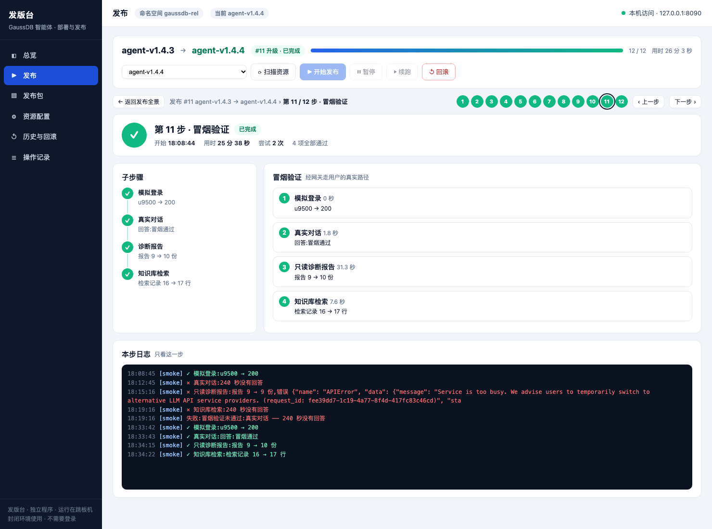
Service is too busy），冒烟停下；服务方恢复后从这一步续跑，4 项全部通过（尝试 2 次）。8.7 完成与发布报告

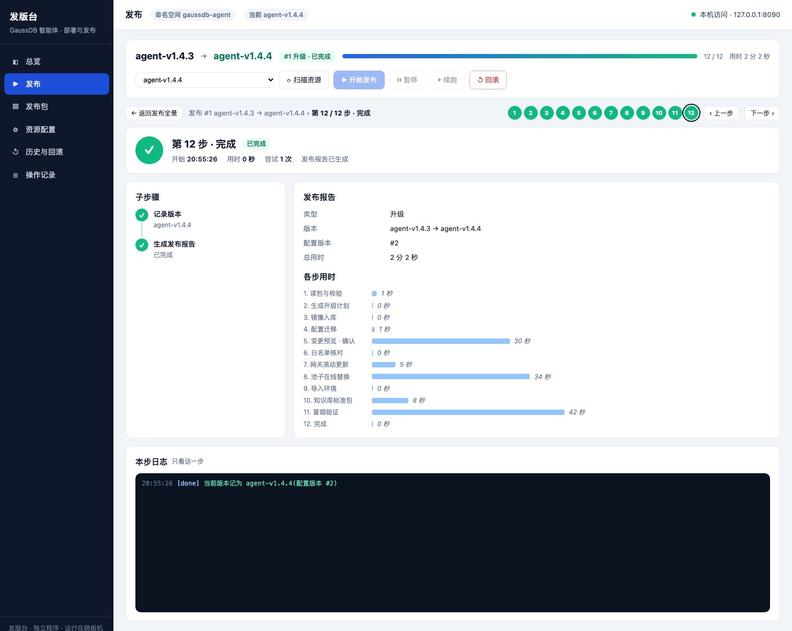
9. 暂停、续跑与回滚
| 操作 | 说明 |
|---|---|
| 暂停 | 在两步之间生效（长等待里也能停下）；停下后点「续跑」接着来。 |
| 失败 | 停在那一步，日志里写着原因；处理后点「从这一步续跑」——每一步都能重复执行，只补做没做完的部分。 |
| 取消 | 在确认关卡上点「取消发布」：集群没有改动。 |
| 回滚 | 以上一个版本为目标再走一遍：镜像已在仓库，白名单、导入环境、知识库标准包不动；资源配置用当前的，集群里现场改过的配置值照样保留。 在「发布」页点「回滚」并选比当前旧的版本（它的离线包要还在发布包目录里）。 |
| 发版台重启 | 正在执行的步骤标「被中断」、整次发布停在「暂停」；停在关卡上的照旧停在关卡上。 |

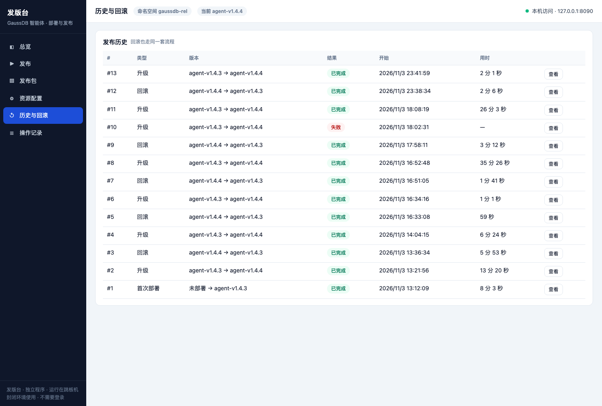
10. 发布包与操作记录

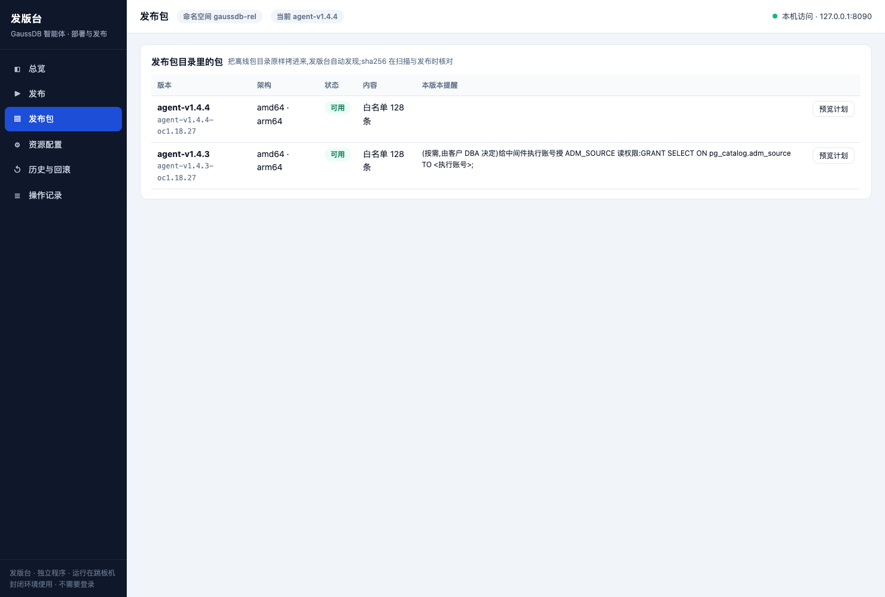

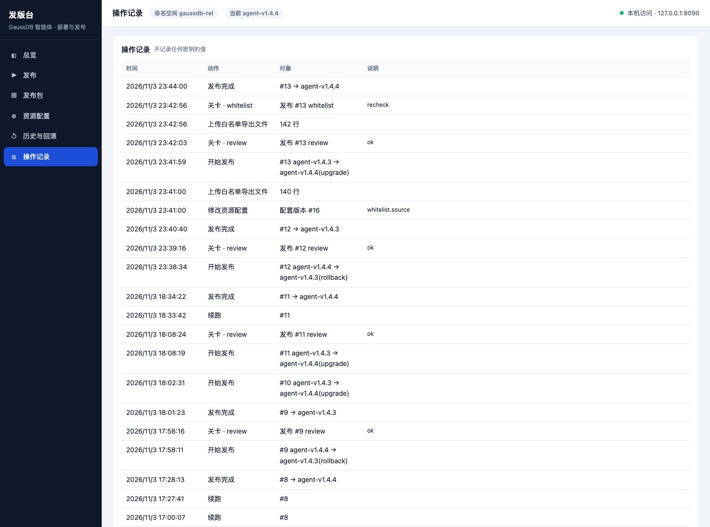
11. 安全
- 不做登录，只听跳板机本机；别的机器经 ssh 转发访问。
- 以启动它的跳板机用户身份运行（不是 root）；状态目录权限 0700、库文件 0600；日志与界面不出现密钥值，写进集群的密钥只留指纹。
- 对集群的改动全部经过「变更预览 · 确认」；不
apply -k，不删命名空间、PV。网关为用户建的诊断容器不动；知识库导入容器只在版本要求时删除（NAS 数据不动）。 - 推进内网仓库的镜像按 digest 钉住：同一标签换过内容时，节点不会接着用缓存的旧镜像。
12. 常见问题
| 现象 | 原因与处理 |
|---|---|
| 启动脚本说「没有本机架构的发版台镜像」 | 包目录里缺 gaussdb-agent-release-*-<架构>.tar.gz，重新拷包 |
| 启动脚本说「sha256 对不上」 | 包拷坏了，重新拷 |
| 扫描「Kubernetes」失败，日志里是 exec / plugin | kubeconfig 用了 exec 认证插件，换成令牌或证书方式的 kubeconfig |
| 扫描「Kubernetes」标黄，说相差几个小版本 | release-console.sh --kubectl <集群配套的 kubectl> 重启 |
| 发布包在列表里标红「是链接，看不到」 | 发布包目录里用了指向别处的链接，拷真文件进来 |
| 扫描「模型服务」标黄 503 / 429 | 模型服务方忙，稍后再扫；这时发布，冒烟会停下等续跑 |
| 白名单只读账号报「认证方式标准客户端不支持」 | GaussDB 的 sha256 认证：请 DBA 按 md5 建只读账号，或改用导出文件 |
| 池子替换一直「等不忙」 | 有人正在等回答；30 分钟后可选「继续等待」或「强制转保留」 |
| 冒烟「真实对话」失败，原文是 Service is too busy | 模型服务方过载，稍后从冒烟这一步续跑 |
| 需要我方协助 | 把状态目录打包发来（不含密钥值） |
13. 相关文档
- 部署上线方案 v1.4.4：第 14 章「升级」（推荐用发版台，也有手工做法）、第 15 章「回滚」
- 发版台运维手册（markdown 版）
- 代码结构说明：
release/一节逐个文件说明